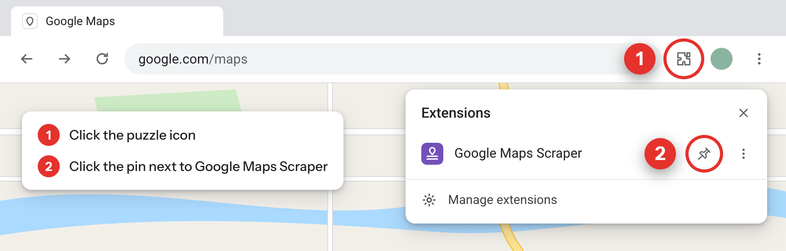
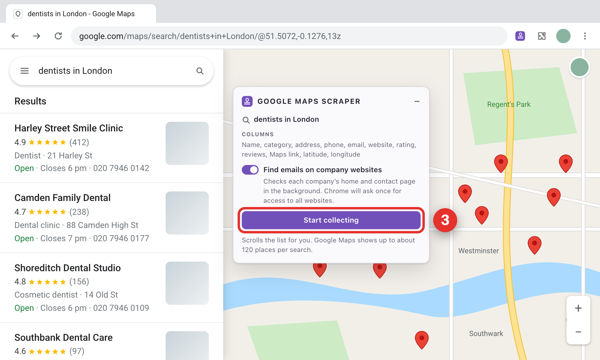
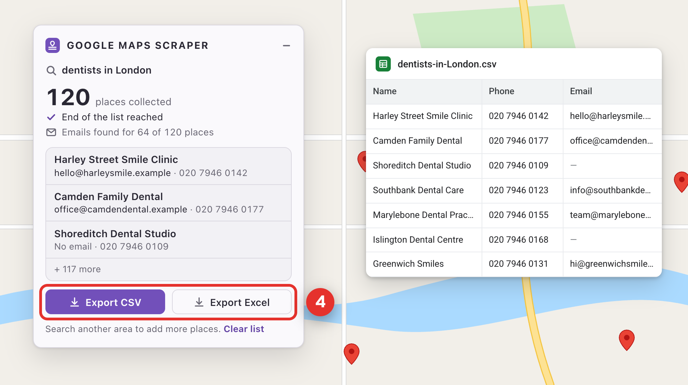
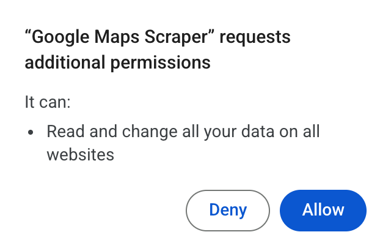

Google Maps Scraper
Google Maps Scraper is installed. Turn any Maps search into a CSV or Excel file.
Chrome hides new extensions behind the puzzle icon — pin it first.

Search Google Maps, then press Start
Search for a type of business in a place, like “dentists in London”. The panel appears over the map — press Start collecting, and it scrolls through the results for you.

Export the list
When it’s done, you’ll see how many places it collected. Download them as a CSV or Excel file — name, address, phone, website, email, rating and more.

About emails. The first time you press Start, Chrome asks once for access to all websites. The extension needs it to find emails on company websites. If you click Deny, you still get the list, just without emails.

Google Maps already open? Tabs you opened before installing work right away — no need to reload them.